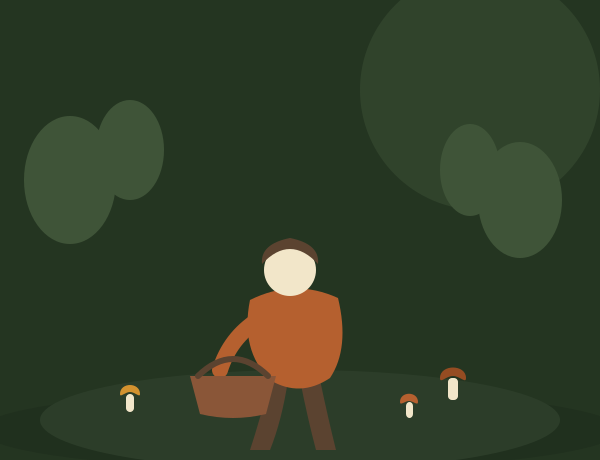

O mnie
Cześć, tu Maks. Ten blog to moje leśne notatki — zbierane od dziesięciu sezonów, spisywane dla Ciebie i dla mnie samego za rok, gdy znowu zapomnę, kiedy zbierać rydze.
Moja przygoda z grzybobraniem zaczęła się przypadkiem, jakieś dziesięć sezonów temu. Sąsiad zaprosił mnie na jednodniową wyprawę „na kilka maślaków”, a ja wróciłem z lasu z pustym prawie koszykiem, obolałymi nogami i dziwnym poczuciem, że właśnie znalazłem coś, czego szukałem od dawna. Od tamtej pory każdy wrzesień wygląda podobnie — budzik przed świtem, termos z herbatą i cisza lasu, w której słychać tylko własne kroki.
Przez lata nauczyłem się grzybów głównie na własnych błędach — i to właśnie one najczęściej pojawiają się na tym blogu. Nie jestem mykologiem z wykształcenia, jestem samoukiem, który latami czytał atlasy, chodził z bardziej doświadczonymi grzybiarzami i weryfikował wątpliwe okazy w punktach skupu, zamiast ryzykować na własną rękę.
Zupa grzybowa z borowików, którą znajdziesz w jednym z wpisów, to przepis mojej mamy — gotowany w naszym domu w każdą pierwszą niedzielę po udanym grzybobraniu, odkąd pamiętam. Dziś gotuję ją dla własnej rodziny i mam nadzieję, że kiedyś ktoś z Was zrobi to samo w swoim domu.

Bezpieczeństwo przede wszystkim
Nigdy nie zachęcam do zbierania „na pewniaka” — każda rada na blogu zakłada ostrożność i weryfikację gatunku.
Szacunek dla lasu
Zbieram tyle, ile faktycznie zjem, i zawsze zostawiam grzybnię w stanie, w jakim ją zastałem.
Dzielenie się wiedzą
Wszystko, czego nauczyłem się przez dziesięć sezonów, spisuję tutaj — bez tajemnic i bez zbędnego żargonu.